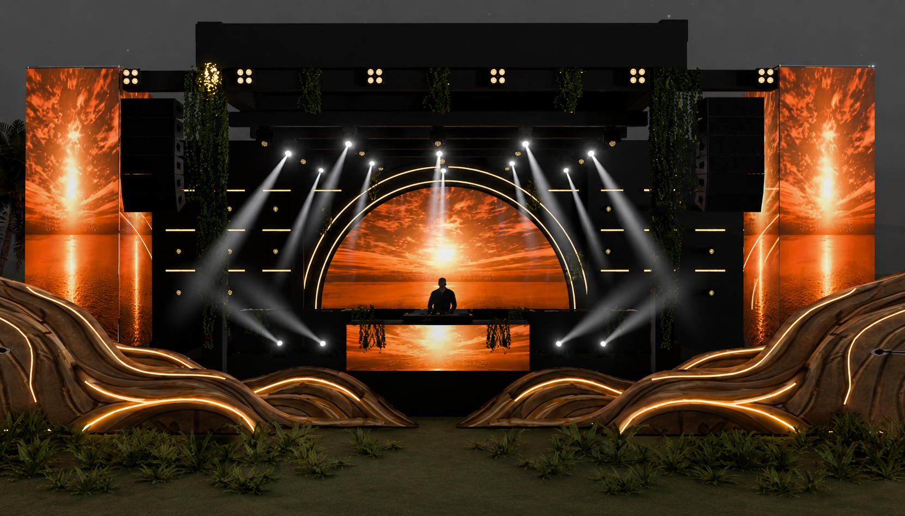

FAQ
Everything to know before ASILI.
Tickets, timing, entry, security, food, drinks and event basics for ASILI Experience at Ngong Racecourse.
What is ASILI Experience?
ASILI Experience is a premium Afro-house, Afro-tech and Amapiano event built around music, culture, fashion, community and curated hospitality.
Where is ASILI Experience happening?
The event takes place at Ngong Racecourse in Nairobi, Kenya.
What time does the event start?
Gates open at 3PM and the experience runs until 2AM.
Where can I get tickets or pre-register?
All ticket details and booking updates are handled through Most Wanted on HustleSasa. Follow ASILI Experience on Instagram for drops and updates.
Who is performing?
The lineup includes Dankie Boi, Kabza De Small, Skillz and Etania.
Is ASILI Experience 18+?
Yes. ASILI Experience is an 18+ event. Carry a valid physical ID or accepted identification for entry checks.
Will there be food and drinks?
Yes. Food vendors and bars will be available inside the event grounds.
Will there be security?
Yes. The event will have trained security, controlled entry and support points around the venue.
Is transport provided?
No. Guests should plan their own drop-off, pickup or ride-share arrangements.
What should I bring?
Bring your ticket confirmation, charged phone, valid ID, comfortable shoes and the right energy.
How do I contact ASILI Experience?
Email info@asiliexperience.com or follow @asiliexperience on Instagram.